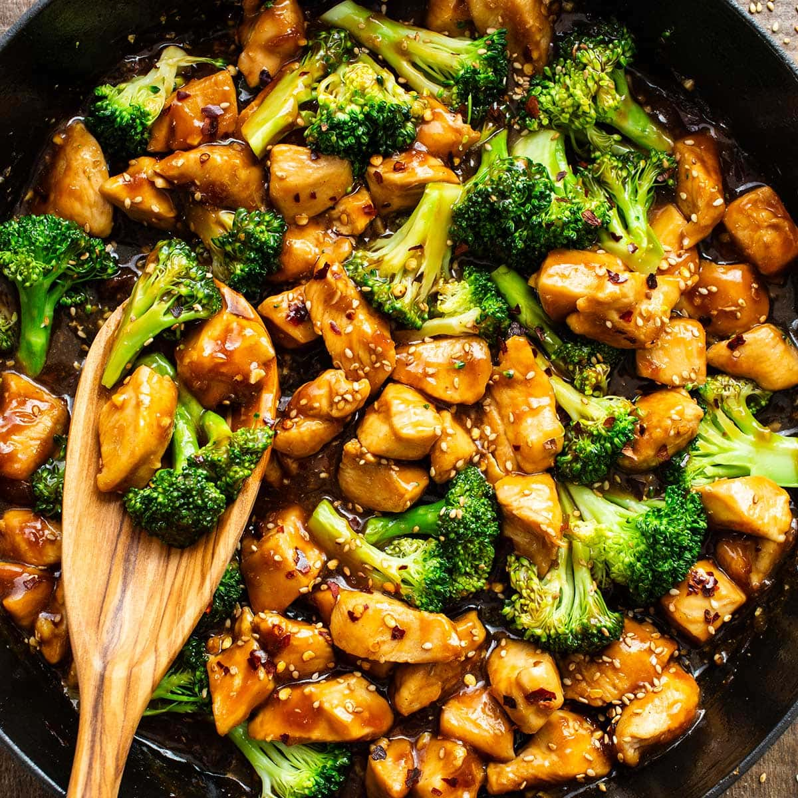

Chicken and Brocoli

Description
This is a high-protein and low-calorie recipe for a savory chicken and brocoli stir-fry. It includes
asian-inspired seasonings, minimal calories, is very filling, and tastes great. You can eat it as is,
pair it with rice, or anything else you'd like! Note: this receipe is enough for 4 individual servings.
Ingredients
- Chicken breast (~1000g)
- Brocoli (~400g)
- Garlic (4 cloves)
- Onion x1 (~125g)
- Oyster sauce (4 tbsp)
- Soy sauce (2 tbsp)
- Cumin (4 tbsp)
- Black pepper (4 tbsp)
- Salt (2 tbsp)
Steps
- Peel the onion and remove its outer layer. Dice the onion into small pieces, then set aside.
- Peel the garlic cloves and remove their outer layer. Crush then dice the garlic cloves into small pieces, then set aside.
- Cut off the brocoli heads into bite-sized pieces. You can also cut off the stalk, then dice the remaining stalk into small pieces.
- Add the brocoli pieces into a pot, fill the pot with water, and place the pot on an active stove.
- Remove the pot once the water starts simmering then drain the water.
- Cut the chicken into bite-sized pieces.
- Add a quarter cup of water to a frying-pan, and place the pan on an active stove.
- Once the water starts boiling, add the diced chicken to the pan. Cook the chicken until white, then drain the water. Set the chicken aside.
- Add the diced onions and garlic into the frying pan on an active-stove. Add soy sauce once the onions start sizzling.
- Stiry onions until the soy sauce is reduced.
- Add the diced chicken to the frying pan and stir. Then add oyster sauce, cumin, black pepper, and salt, then stir.
- Add the diced brocoli to the frying pan and stir.
- Sprinkle sesame seeds on top to finish.
Home